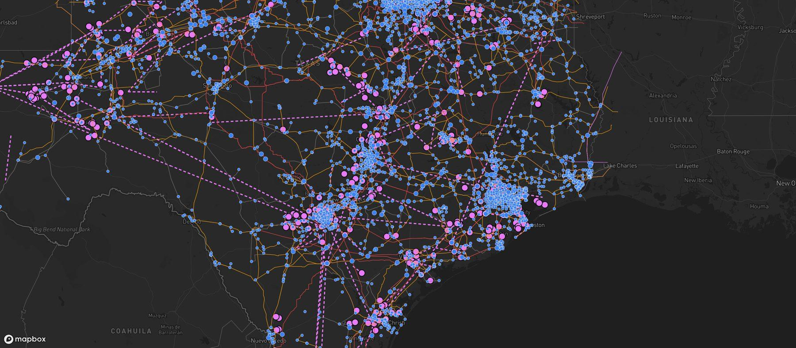

Barrio Grid Connector
Texas power grid siting data for AI agents and developers. Ask where the nearest substation is, what utility serves a site, what is in the ERCOT queue nearby, or which parcels sit next to high-voltage power.

4,939 substations · 7,033 transmission lines · 1,874 ERCOT queue projects · 664 planned upgrades · 213,000 parcels
See the map and plans Get a free key
One MCP server and a matching REST API. Works with Claude, ChatGPT, Muse and any agent that can call a URL.
Try it
Connect
MCP server (streamable HTTP, no sign-in on the free tier):
- Claude: Settings, Connectors, Add custom connector, paste the URL, leave the OAuth fields blank.
- ChatGPT: Settings, Apps and Connectors, Create, paste the URL, authentication None.
- Muse or any other agent: give it the URL above or this page and it can build the skill itself. A ready-made skill file is at /grid/skill.md.
REST, same tools, GET with query parameters or POST JSON:
Tools
| Tool | What it answers |
|---|---|
| grid_context | Everything around one site: county, likely serving utility, 3 nearest substations, transmission lines, ERCOT queue projects and planned transmission upgrades within 25 miles. |
| nearest_substation | Closest substations to an address or coordinate, with voltage, owner and distance in miles. Filter by minimum kV. |
| find_powered_land | Parcels near a qualifying substation, by county or point and radius, with acreage and distance to the substation. |
| ercot_queue | ERCOT generation and storage interconnection projects near a site or in a county: fuel, MW, study status. |
| barrio_sites | Powered Texas sites Barrio Energy offers for lease. Free and unmetered. |
| upgrade_to_pro | Pro checkout link. Muse and other agents can buy Pro for a user with Link after the user approves. |
Inputs take a street address, a Texas city or county name, or lat + lng. Distances are in miles. Texas only.
Pricing
| Tier | Limits | Price |
|---|---|---|
| Free | No key: 25 calls a day. Free key: 100 calls a day, 25 parcels per search. | 0 |
| Pro | 5,000 calls a month, 200 parcels per search, 50 mile radius, and the web map. One API key, sent as Authorization: Bearer grid_... | 249 USD a month, subscribe |
| Enterprise | Custom limits and data. | Ask for a quote |
Data
- Substations and transmission: HIFLD, with owners enriched by Barrio.
- Generation and storage queue: ERCOT GIS reports.
- Planned transmission and substations: Barrio research from ERCOT RPG and PUCT filings.
- Parcels: TNRIS StratMap. Coverage today: Austin, Bee, Colorado, Jackson, Lavaca, Live Oak, Matagorda, San Patricio and Wharton counties.
Screening data. Confirm capacity and interconnection with the utility before relying on it. Questions: ivan@barrioenergy.com.